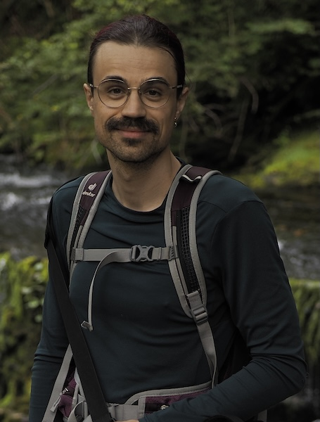

taken in may 2025 at kew gardens by amber cooper davies.
welcome to the web pages for troy kaighin astarte. (it is meant to look like this.)
maybe you came here for my email. it’s t.k.astarte@swansea.ac.uk. or if you are writing about annals, it’s t.astarte@ieee.org.
maybe you want to see what I look like? this:
taken in may 2025 at kew gardens by amber cooper davies.
or maybe for my publications?
or a cv? that’s not here yet. sorry.
troy kaighin astarte is (for now) a lecturer in computer science at swansea university. troy graduated with a degree in computer science and a phd in the history of computer science from newcastle university. their research is in the history of computing and computer science, with previous work on the history of programming language semantics and concurrency. troy’s teaching is in various areas of computing with a focus on shaping a more socially-aware generation of graduates.
at swansea, they are a member of the educational, historical, and philosophical foundations of computer science research group (ehp), the robert recorde centre for fundamental studies, the centre for digital arts and humanities (codah), the computer science theory group, the fit lab, and the history of computing collection.
outside swansea, troy is the editor-in-chief of ieee annals of the history of computing, a member of the ieee cs history committee, and acm history committee.
as an agender person (pronouns: they/them) troy appreciates gender-neutral terms of address. this is why the bio is written in the third person. they like to be called ‘troy’ or if more formality is needed, ‘dr. troy’. please, not ‘professor’ or ‘sir’.
if you want bibtex of any publication, they are all here: tkastarte.bib.
i decided most people probably don’t care that much about every talk, proceedings edited, reviews, and the like. you can find most of them in the above-linked bib if you really want. i haven’t included the journal editorials.
i might host pdfs here later. for now, if you see this page and really want a pdf, email me.
Troy Kaighin Astarte. Conceptualising programming language semantics. Philosophies, 10(4):90 2025. https://doi.org/10.3390/philosophies10040090
Troy Kaighin Astarte. Tense & temporality: Computers and the logic of time. In Arianna Borrelli and Helena Durnova, editors, Computing Practices and Knowledge Cultures. meson press, 2025. Forthcoming. pdf
Troy Kaighin Astarte. From monitors to monitors: an early history of concurrency primitives. Minds and Machines, 34:51–71, 2023. https://doi.org/10.1007/s11023-023-09632-2.
Troy Kaighin Astarte. “Difficult things are difficult to describe”: The role of formal semantics in European computer science, 1960–1980. In Janet Abbate and Stephanie Dick, editors, Abstractions and Embodiments: New Histories of Computing and Society. Johns Hopkins University Press, August 2022. pdf
Troy Kaighin Astarte. Formalising Meaning: a History of Programming Language Semantics. PhD thesis, Newcastle University, June 2019. https://cronfa.swan.ac.uk/Record/cronfa59379
Cliff B. Jones and Troy Kaighin Astarte. Challenges for semantic description: comparing responses from the main approaches. In Jonathan P. Bowen, Zili Zhang, and Zhiming Liu, editors, Proceedings of the Third School on Engineering Trustworthy Software Systems. LNCS 11174. Springer, 2018. https://doi.org/10.1007/978-3-030-02928-9_6
Troy Kaighin Astarte and Cliff B. Jones. Formal Semantics of ALGOL 60: Four Descriptions in their Historical Context. In Liesbeth De Mol and Giuseppe Primiero, editors, Reflections on Programming Systems - Historical and Philosophical Aspects. Springer, 2018. https://doi.org/10.1007/978-3-319-97226-8_4
me: taken in early august 2025 by kate mee

misty: taken at my old house like ten years ago by me

puffins: taken on skomer island by me and choppily gif’d

Last updated: 2025-08-11